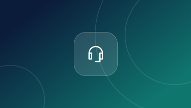
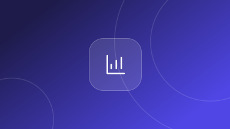
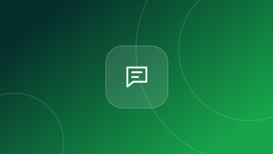
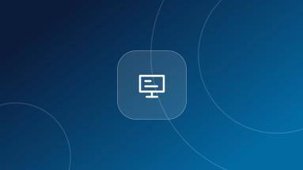
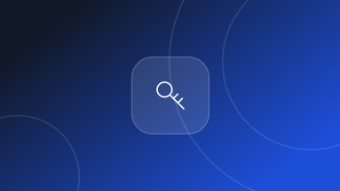

مقال مميز
مستقبل تجربة العملاء في السعودية 2026: الاتجاهات التي ستصنع الفرق
من الذكاء الاصطناعي إلى القنوات الموحدة؛ نستعرض أبرز التحولات التي تعيد تشكيل توقعات العملاء وكيف تستعد شركتك لها من الآن.
اقرأ المقالSANAD CX BLOG — مدونة سند
مقالات وأدلة عملية حول إدارة تجربة العملاء، وتشغيل مراكز الاتصال، وتحويل كل محادثة إلى فرصة نمو حقيقية لأعمالك.
مقالات جديدة كل أسبوع
من الذكاء الاصطناعي إلى القنوات الموحدة؛ نستعرض أبرز التحولات التي تعيد تشكيل توقعات العملاء وكيف تستعد شركتك لها من الآن.
اقرأ المقالأحدث المقالات
خطوات عملية لتنظيم قنوات الدعم وتوزيع المحادثات بذكاء، بما يرفع رضا العملاء ويخفض معدلات التخلي عن المكالمات.
اقرأ المقال
نحسب معاً التكلفة الحقيقية لكل نموذج تشغيلي، من الرواتب والتدريب إلى البنية التحتية وساعات العمل الضائعة.
اقرأ المقال
من معدل الحل من أول تواصل إلى رضا العملاء (CSAT)؛ تعرّف على المؤشرات التي تكشف جودة خدمتك فعلاً.
اقرأ المقال
كيف تبني تجربة محادثة سريعة وشخصية على واتساب تقود العميل من الاستفسار الأول حتى إتمام الشراء.
اقرأ المقال
نموذج Plug & Play يتيح لفريقنا العمل مباشرة على أنظمتك الحالية، مع الحفاظ على بياناتك وسير عملك كما هو.
اقرأ المقال
اتفاقيات عدم الإفصاح، وصلاحيات الوصول المقيدة، وملكية البيانات؛ ضمانات أساسية يجب أن تطلبها من أي شريك.
اقرأ المقال